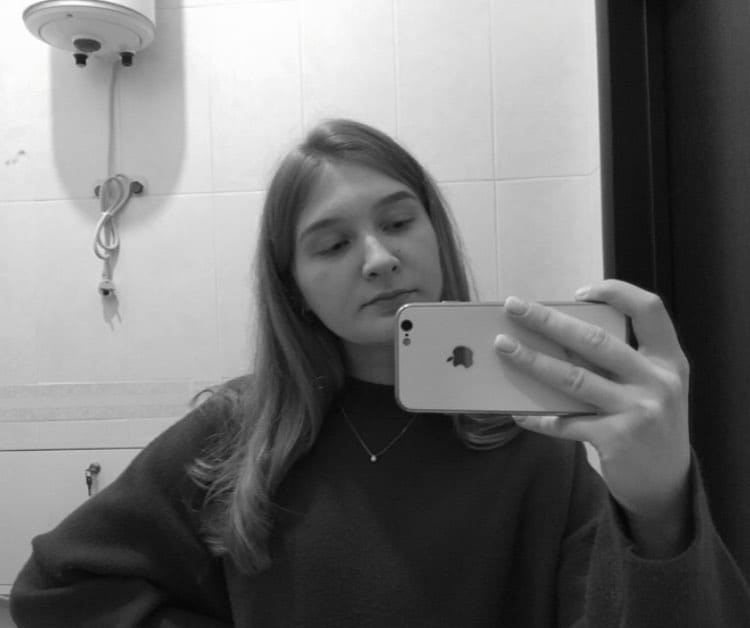
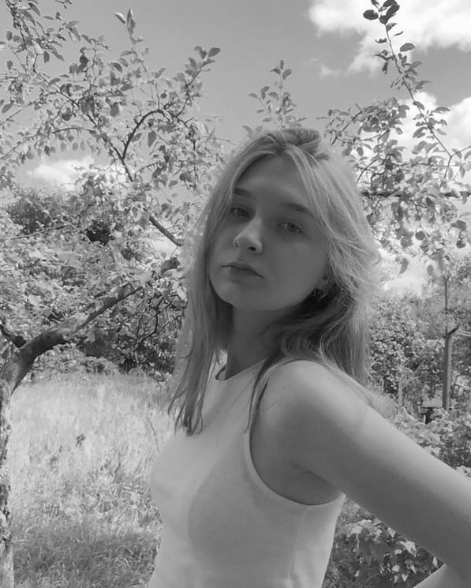
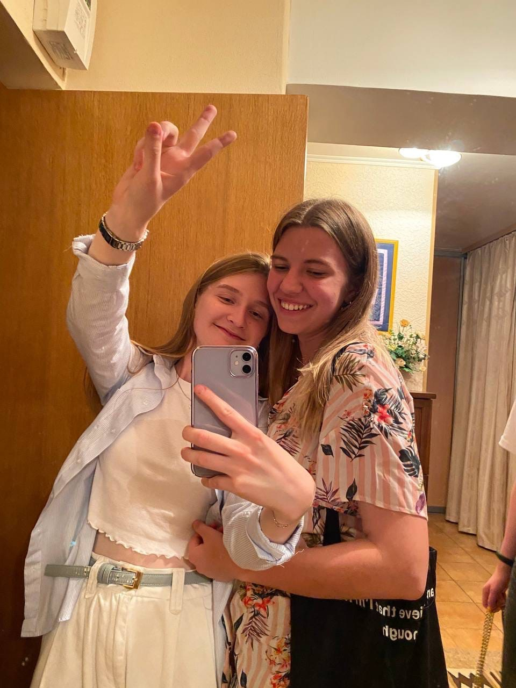
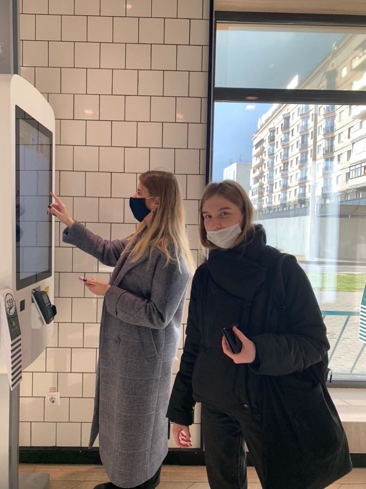
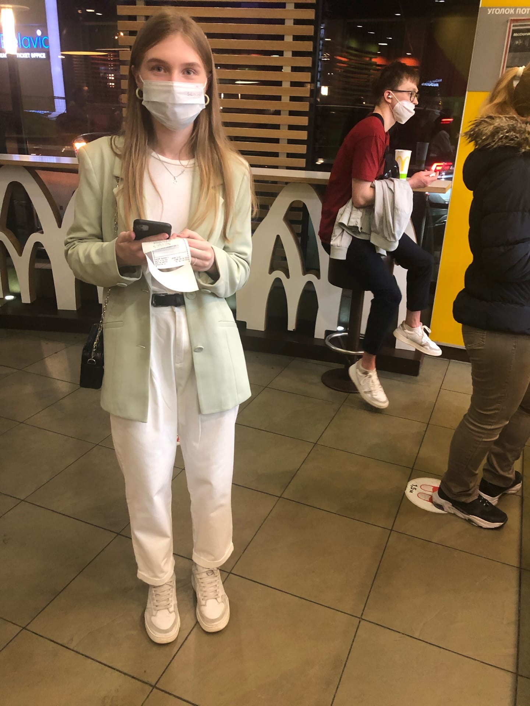
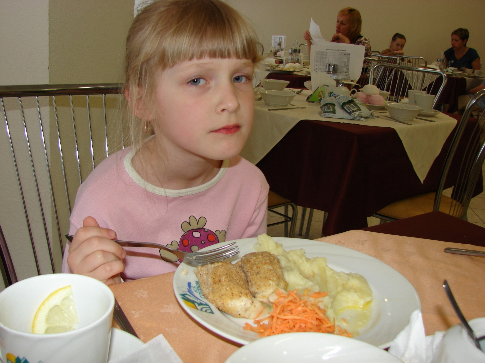

У Юли даже дата рождения красивая.... 30.03.03 А это получается, она Овен по знаку зодиака, а это мой любимый знак (на этом, в принципе, можно и заканчивать сайт).


Такой я увидела Юлю, когда смотрела страницы одногруппников перед 1 сентября прошлого года. Если честно, сначала она меня пугала, я думала, что она слишком крутая. После того, как мы познакомились уже в Академии, Юля показалась мне очень тихой и, наверно, даже скучной...
Но потом мы начали вместе ходить в бассейн, и мое мнение полностью изменилось....
Так вышло, что все мои первые впечатления об Юле оказались ложными. Я впервые встретила настолько открытого человека, который буквально с первых же минут общения располагает к себе. После того, как мы впервые пообщались, я уже думала, что готова общаться с ней всю жизнь.

ТОП-3 причины, почему я люблю Юлю
1. Юля ходит в мак


2. Это фото.

3. Юля просто самая лучшая, мы все её очень любим!!!